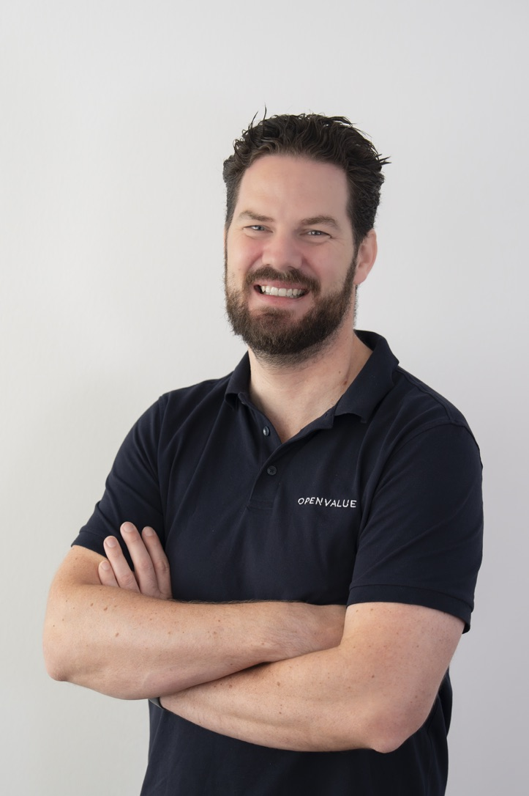

Ramon Wieleman
Group Director at OpenValue. Not a developer. I know my way around IT and AI, and lately I build things myself.

At work
I work at OpenValue, a group of software consultancies specialised in Java and full-stack development. OpenValue is part of Tech Tribes. I also work with Code Nomads.
My job is not writing the software. It is making sure the people who do can do their best work, and that clients know what we can do for them. That means client events, our training programme, and more and more often a conversation about AI: what it changes for a software team, and how to use it without giving up control over quality.
At home
I live in Santpoort-Noord with my wife and our daughter.
I am on the board of the Harddraverij Vereniging Santpoort en Omstreken. The association organises the Kortebaan of Santpoort, a harness race that was first run in 1752 and is on the Dutch inventory of intangible heritage. Around it, the village holds a festival of eight days every summer. I look after its website.
Things I built
-
Nov 2026
Ramon's Rampage
A top-down city game with cars, police, a radio and a tank. Built in one day with Claude, without writing a line of code myself.
-
Jun 2026
A calendar feed for the village festival
A small plugin that puts the programme of the Dorpsfeest Santpoort into the calendar of the club app, so nobody has to type it over.
Writing
-
GTA 6 comes out tomorrow. I spent today building my own GTA 1.
18 November 2026